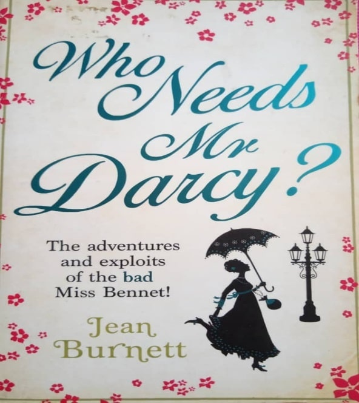

PRELOVED BOOKSTORE | 

Who Needs Mr Darcy?
Preloved Price: RM 12.00
Category:Romance, historical fiction
Summary: Mr Wickham turned out to be a disappointing husband in many ways, the most notable being his early demise on the battlefields of Waterloo. And so Lydia Wickham, nee Bennet, still not twenty and ever-full of an enterprising spirit, must make her fortune independently. A lesser woman, without Lydia's natural ability to flirt uproariously on the dancefloor and cheat seamlessly at the card table, would swoon in the wake of a dashing highwayman, a corrupt banker and even an amorous Royal or two. But on the hunt for a marriage that will make her rich, there's nothing that Lydia won't turn her hand to . . . Taking in London, Paris and Brighton, Who Needs Mr Darcy? details the charming, lively and somewhat dastardly further exploits of the youngest Bennet sister. Pride and Prejudice this isn't and Mr Darcy certainly won't be rescuing her this time.
| Title | Who Needs Mr Darcy? |
|---|---|
| ISBN | 9780751547047 |
| Format: | Paperback |
| Author: | Jean Burnett |
| Category: | Romance,historical fiction |
| Publisher: | Little, Brown Book Group |
*Reminder: Please copy&paste the title of the book to put into the order list and also please calculate the price of the book your own to pay it on checkout form.